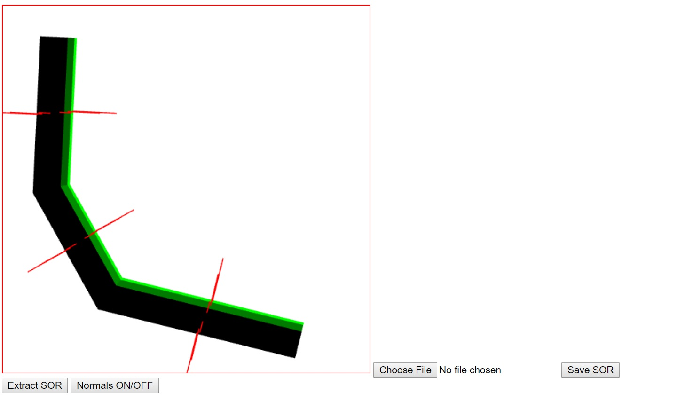

Name: Stephen Woodbury
Student ID: 1429496 : swoodbur
Submission For: Lab2
Date: 10/22/2017
Files Included: WoodburyStephenLab2Features.html, WoodburyStephenLab2Driver.html, WoodburyStephenLab2Driver.js, WoodburyStephenLab2Output.jpg
Assignment Details: To give our Cylinders from prog1 color and shading
Additional Features: There are no additional features
Notes: This is not complete. Saving and Loading objects is not fully functional Coloring of my generalized cylinder is not perfect and needs some work I didn't touch projection at all and was rather confused as to what we were supposed to do about it and how to implement it. I also didn't get the normal toggle button to work For coloring, I multiplied the magnitude of the color by a factor of 2 to make it more noticeable. Additionally, the code is messy and a work in progress. It will be cleaned up by next assignment, and the kinks will be worked out
ScreenShot of Output: WoodburyStephenLab2Output.jpg
Link to Driver : WoodburyStephenLab2Driver.html